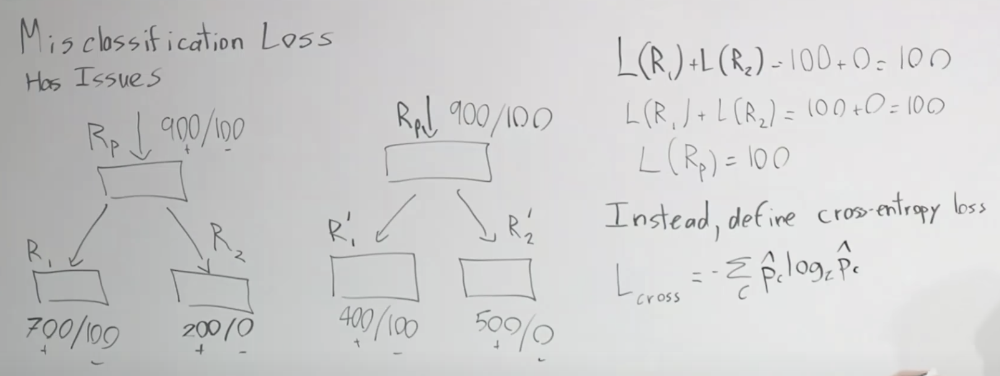

Lec 10-Decision Trees - Ensemble Methods
Contents
Lec 10-Decision Trees - Ensemble Methods#
Outline#
Decision Trees
Ensemble Methods
Bagging
Random Forests
Boosting
Decision Trees#
Non-linear model
A model is called linear if the hypothesis function is of the form \(h(x) = \theta^{T}x\)
Ski example - months vs latitude - when you can ski
we cannot get a linear classifier or use SVM for this
with decision trees you will have a very natural way of classifying this
partition this into individual regions, isolating positive and negative examples
Selecting Regions - Greedy, Top-Down, Recursive Partitioning#
You ask question and partition the space and then iteratively keep asking new question, partitioning the space
Is latitude > 30
Yes
Is Month < 3
Yes
No
No
We are looking for a split function
Region \(R_{p}\)
Looking for a split \(S_{p}\)
\(S_{p}(j,t) = (\{ X|X_{j} \lt t, X \in R_{p}\}, \{ X|X_{j} \ge t, X \in R_{p}\} ) = (R_{1}, R_{2})\)
where j is the feature number and t is the threshold
How to choose splits#
isolate space of positives and negatives in this case
Define L(R): loss on R
Given C class, define \(\hat{p_{i}}\) to be the porportion of examples in R that are of class C
Define misclassification loss of any region as
\(L_{misclass}(R) = 1 - \max\limits_{C} \hat{p}_{C}\)
what we are saying here is for any region that we have subdivided, we want to predict the most common class there, which is the maximum of \(\hat{p}_{C}\). The remaining is the probability of misclassification errors.
We want to pick a split that maximizes the decrease of loss as much as possible over parent \(R_{parent}\) and children regions \(R_{1}, R_{2}\)
\(\max\limits_{j,t} L(R_{p}) - (L(R_{1}) + L(R_{2}))\)
Why is misclassification loss the right loss#
 $\tiny{\text{YouTube-Stanford-CS229-Andrew Ng/Raphael Townshend}}$We might argue that the decision boundary on right scenario is better than left, because in the right we are isolating out more positives
Loss of R1 and R2 region = 100 on right scenario
Loss of R1’ and R2’ region = 100 on left scenario
The loss of both parent Rp is also 100
We can see that the misclassification loss is not sensitive enough
its not sensitive enough or the loss is not informative enough because the parent level loss is same as child level loss
Instead we can define cross entropy loss
\(L_{cross}(R) = - \sum\limits_{c}\hat{p}_{c} log_{2}\hat{p}_{c}\)
we are summing over the classes the proportion of elements in that class times the log of proportion in that class
if we know everything about one class, we dont need to communicate, as we know everything that it’s a 100% chance that it is of one class
if we have a even split, then we need to communicate lot more information about the class
Cross entropy came from information theory where it is used for transmitting bits, where you can transmit bits of information, which is why it came up as log base 2
Misclassification loss vs Cross-entropy loss#
Let the plot be between \(\hat{p}\) - the proportion of positives in the set vs the loss
the cross-entropy loss is a strictly concave curve
Let \(L(R_{1})\) and \(L(R_{2})\) be the child loss plotted on the curve
Let there be equal number of examples in both \(R_{1}\) and \(R_{2}\), are equally weighted
the overall loss between the two is the average loss between the two, which is \(\frac{L(R_{1}) + L(R_{2})}{2}\)
the parent node loss is the projected loss on the curve \(L(R_{p})\)
the projection height is the change in loss
as we see below, \hat{p} parent is the average of child proportions
the cross-entropy diagram
the misrepresenstation loss
if we end up with child node loss on the same side of the curve, there is no change in loss and hence no information gain based on this kind of representation
this is not strictly concave curve
the decision splits curves that are successfully used are strictly concave curve
Gini curve
\(\sum\limits_{c}\hat{p}_{c}(1-\hat{p}_{c})\)
Regression Tree - Extension for decision tree#
So far we used decision tree for classification
Decision trees can also be used for regression trees
Example: Amount of snowfall
Instead of predicting class, you predict mean of the
For Region \(R_{m}\), the prediction will be
Predict \(\hat{y}_{m} = \frac{\sum\limits_{i \in R_{m}}Y_{i}}{|R_{m}|}\)
sum all the values within the region and average them
The loss will be
\(L_{squared} = \frac{\sum\limits_{i \in R_{m}} (y_{i} - \hat{y}_{m})^{2} }{|R_{m}|}\)
Categorical Variables#
can ask questions on any form of subset, is location in northern hemisphere?
\(location \in \{N\}\)
if there are q categories, the possible number of splits would be \(2^{q}\), which very quickly becomes intractable
Regularization of DTs#
if you carry on the process of splits, you can split region for each datapoint and that will be case of overfitting
Decision trees are high variance models
So we need to regularize the decision tree models
Heuristics for regularization
If you have a minimum leaf size, stop
max depth
max number of nodes
min decrease in loss
Before split, the loss is: \(L(R_{p})\)
After split, the loss is: \(L(R_{1}) + L(R_{2})\)
if after split, the loss is not great enough, we might conclude that it didn’t gain us anything
but there might be some correlation between variables
pruning
you grow up your full tree and check which nodes to prune out
you have a validation set that you use and you evaluate what your misclassification error is on the validation set, for each example for each leaf
Runtime#
n train examples
f features
d depth of tree
Test time O(d)#
d < log n
Train time#
Each point is part of O(d) nodes
Cost of point at each node is O(f)
for binary features, the cost will be f
for quantitative features, sort and scan linearly, the cost will be f, as well
Total cost is O(nfd)
where data matrix size is nf
and depth is log n
so cost is fairly fast training time
Downside of DT#
it does not have additive structure
in the example below we get a very rough estimation of decision boundary
decision trees have problems where the features are interacting additively with one another
DT - Recap#
Pos
Easy to explain
Interpretable
can deal with categorical variable
generally fast
Neg
high variance problems - generally leads to overfitting
Not additive
Low predictive accuracy
We can make it lot better with ensembling
Ensembling#
take \(X_{i}'s\) which are random variables that are independent identically distributed (i.i.d.)
\(Var(X_{i}) = \sigma^{2}\) \(Var(\bar{X}) = Var\left(\frac{1}{n}\sum\limits_{i}X_{i}\right) = \frac{\sigma^{2}}{n}\)
which means each independent rv is decreasing the variance of your model
If we drop the independence assumption, so now \(X_{i}'s\) are only i.d. X’s are correlated by \(\rho\)
So the variance of mean will be:
\(Var(\bar{X}) = \rho \sigma^{2} + \frac{1-\rho}{n} \sigma^{2}\)
if they are fully correlated (\(\rho = 1\)), it becomes \(Var(\bar{X}) = \sigma^{2}\)
if there is no correlation(\(\rho = 0\)), it becomes \(Var(\bar{X}) = \frac{\sigma^{2}}{n} \)
there would be interest in models with large n so the second term goes down. Also have models that are decorrelated so the first term goes down
Ways to ensemble#
different algorithms, not really helpful
use different training sets, not really helpful
Bagging - Random Forest
Boosting - Adaboost, xgboost
Bagging#
Bootstrap aggregation
bootstrapping is a method used in statistics to measure uncertainty
Say that a true population is P
Training set \(S \sim P\)
Assume population is the training sample P = S
Bootstrap samples Z \sim S
Z is sampled from S. We take a training sample S with cardinality N. We sample N times from S with replacement, because we are assuming that S is a population and we are sampling from a population
Take model and then train on all these separate bootstrap samples
Bootstrap aggregation#
we will train separate models separately and then average their outputs
Say we have bootstrap samples \(Z_{1},...,Z_{M}\)
We train model \(G_{m}\) on \(Z_{m}\) and define
Aggregate Predictor \(G(m) = \frac{\sum\limits_{m=1}{M}G_{m}(x)}{M}\)
This process is called bagging
Bias-Variance Analysis#
\(Var(\bar{X}) = \rho \sigma^{2} + \frac{1-\rho}{n} \sigma^{2}\)
Bootstrapping is driving down \(\rho\)
But what about the second term
With the increase in bootstrap samples, the M term increases, driving down the second term
A nice property about bootstrapping is that increasing the number of bootstrap models does not cause overfit than before.
More M causes less variance
But the bias of the model increases
because of the random subsampling from S, it causes model to be less complex as we are drawing less data, and increases the bias
Decision Trees + Bagging#
DT have high variance, low bias
this makes DT ideal fit for bagging
Random Forest#
RF is a version of decision trees and bagging
the random forest introduces even more randomization into each individual decision tree
1st - Earlier we learnt, bootstrapping drives down \(\rho\)
2nd - But if we can further decorrelate the random variables, we can drive down the variance even further
At each split for RF, we consider only a fraction of your total features
1st - Decreasing \(\rho\) in \(Var(\bar{X})\)
2nd - Say in a classification problem, we have found a very strong predictor that gives very good performance on its own (in ski example - the latitude split), and we use that predictor first at the first split. That causes all your models to be very highly correlated. So we should try to decorrelate the models
Boosting#
In bagging we tried to reduce variance
Boosting is opposite. In boosting we try to reduce bias
Is additive
In bagging, we took average of number of variables
In boosting, we train one model and then add it into the ensemble and then keep adding in as prediction
Decision stump - ask one question at a time
the reason behind this is: we are decreasing bias by restricting the tree depth to be only 1
this causes the bias to increase and decrease the variance
Say we make a split and make some misclassifications.
we identify those mistakes and increase the weights
in the next iteration, it works on the modified sets - because of more weights on misclassfied samples, split might pick this weighted decision boundary
Adaboost#
Determine for classifier \(G_{m}\) a weight \(\alpha_{m}\) proportional, which is log odds
\(log\left( \frac{1-err_{m}}{err_{m}}\right)\)
Total classifier
\(G(x) = \sum\limits_{m}\alpha_{m}G_{m}\)
each \(G_{m}\) is trained on re-weighted training set
Similar mechanism is used to derive algorithm like XGBoost or gradient boosting machines that allow us to reweight the examples we are getting right or wrong in dynamic fashion and then adding them in additive fashion to your model